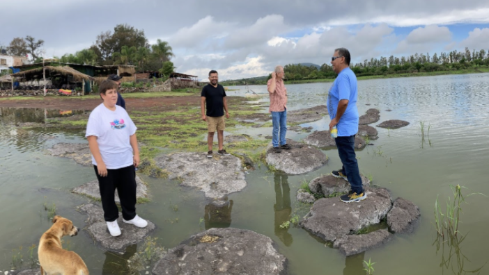

For this journal entry, I read “Game Design Principles Every Game Designer Should Know” from Juego Studio.
The article explains how strong games are built on clear goals, balanced challenges, and meaningful rewards.
One idea that stood out to me was how important balance is. If a game is too easy, players lose interest,
but if it’s too difficult or confusing, they stop playing. This made me think about the game we are creating
in class and how even simple rules need to feel fair and understandable.
I also connected with the idea of feedback. Players need to clearly see what happens after they make a choice.
This relates a lot to UX design. If a button doesn’t respond or the score doesn’t update clearly, the experience
feels broken. Good design is not just about how something looks, but how it communicates with the player.
Overall, this article helped me understand that game design requires creativity, structure, and intentional thinking.
Image by Brandon Wong, 2026

Image by Eric Toscano, 2026
The two images explore everyday environments, yet reveal deeper meaning through close observation. In the street scene, the dramatic contrast in scale between the compact white car and the large orange truck creates visual tension. The bold orange color dominates the frame and establishes hierarchy. In the water scene, spacing between the figures becomes significant. Their physical distance and body language suggest subtle emotional separation, while the muted tones of the sky and reflective water create a contemplative atmosphere.
While the obvious subjects are transportation and people in nature, the more mysterious elements lie in the narrative. To push these images further, experimenting with perspective—such as lowering the camera angle, isolating a single subject, or rephotographing at a different time of day—could enhance mood and create a more expressive and layered story.
Part Two – Reflection on My Own Image
Image by Liliana Espinoza, 2026
The image I am most excited about is the close-up of my red and pink nail design. Although it appears to document a manicure, the composition highlights texture, shine, and pattern. The soft background contrasts with the sharp focus on the nails, emphasizing detail and craftsmanship. The heart motifs suggest themes of identity and self-expression.
This image relates to my archive because my collection focuses on personal style and the small details that shape self-presentation. Nail art reflects mood, creativity, and confidence. My archive tells a story about how everyday visual choices contribute to identity. To strengthen the image, I could experiment with stronger lighting, tighter cropping, or placing the hand within a more symbolic setting to deepen narrative meaning.
Learning Journal 3: Visual Thinking Strategies Research
The article “10 Intriguing Photographs to Teach Close Reading and Visual Thinking Skills” emphasizes the importance of slowing down and actively engaging with images rather than consuming them at a glance.
What stood out to me most was the idea that visual thinking is a learned skill that improves through questioning and discussion. By encouraging viewers to look closely, notice detail, and infer meaning, the article reframes images as sources of inquiry rather than decoration.
To explore how visual thinking is applied in digital spaces, many designers use Awwwards as inspiration. Awwwards remains a valuable resource for visual experimentation and demonstrates how interaction design can deepen visual thinking when used intentionally.
Learning Journal 2: Overuse of Overlays and Dialog Windows
The article “Overuse of Overlays: How to Avoid Misusing Lightboxes” by the Nielsen Norman Group examines how overlays can negatively affect user experience when they are overused or poorly implemented.
One key point is that overlays should be used sparingly and only when they clearly support a user’s goal. Many overlays could be replaced with inline content or dedicated pages, helping users remain oriented within the interface.
I found the discussion of accessibility particularly important. Poorly designed overlays can create barriers for keyboard and screen reader users. This article reinforced that effective design should prioritize clarity, accessibility, and user control.
Learning Journal 1: Best Practices for Form Design
The article Best Practices for Form Design emphasizes how thoughtful web form design can improve user experience. Forms are one of the primary ways users communicate with digital systems, and poor design can make simple tasks frustrating.
A major idea is minimizing user effort by reducing unnecessary complexity and guiding users clearly through completion. The goal is not only to collect information but to do so efficiently.
I found the importance of inline feedback especially compelling, as small design decisions can determine whether a user completes a form or abandons it.